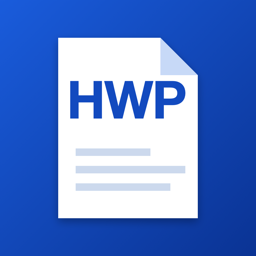
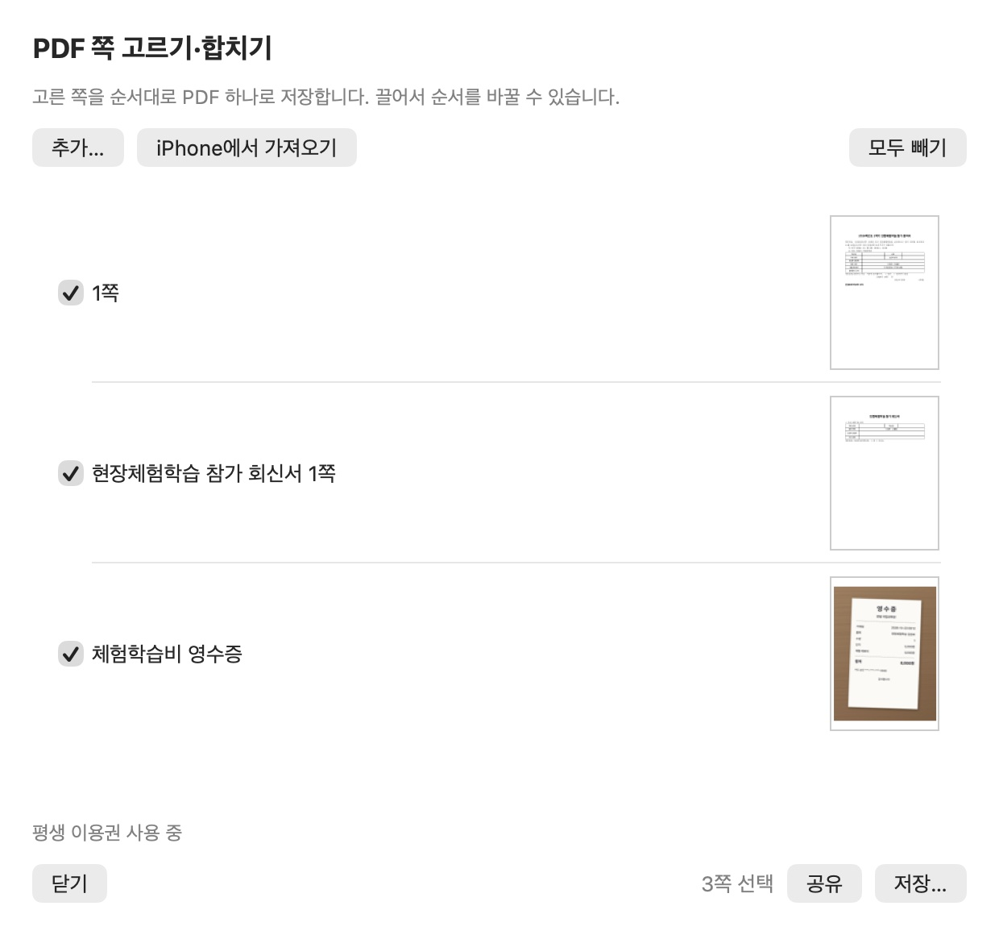

한글 문서에 사진·다른 PDF를 붙여 PDF 하나로 보내려면?
HWP 뷰어를 만드는 개발자 ongsim이 직접 쓴 안내입니다.
이럴 때 씁니다
- 현장체험학습 신청서에 영수증 사진을 붙여 한 파일로 내야 할 때
- 지원서와 증명서 PDF를 한 파일로 묶어 제출해야 할 때
- 한글 문서에서 필요한 쪽만 골라 PDF로 보내고 싶을 때
HWP 뷰어 1.5.0 이상(아이폰·아이패드·Mac). 지금 문서의 쪽만 고르기는 무료입니다. 사진·스캔·다른 PDF를 넣어 묶기는 3번까지 무료이고, 그 뒤에는 평생 이용권(구독 아님)이 필요합니다. 같은 Apple 계정이면 iPhone·iPad·Mac에서 이용권을 함께 씁니다(‘구입 복원’).
아이폰·아이패드에서
- 한글 문서를 열고 ‘보내기·프린트’ 메뉴 › ‘PDF 쪽 고르기·합치기…’를 누릅니다.
- 문서의 쪽이 모두 체크된 채로 나옵니다. 뺄 쪽은 체크를 지웁니다. ‘모두 고르기’, ‘모두 빼기’도 있습니다.
- ‘추가’ 메뉴에서 넣을 것을 고릅니다.
- 사진: 사진 1장이 1쪽이 됩니다.
- 파일: PDF나 그림 파일을 넣습니다.
- 스캔: 카메라로 종이를 스캔해 넣습니다(지원 기기에서).
- 쪽을 끌어서 순서를 맞춥니다. 목록 순서대로 PDF 하나가 됩니다.
- ‘n쪽 공유’를 누릅니다. 공유 시트에서 파일 앱에 저장하거나 메일·메신저로 보냅니다.
Mac에서
- 한글 문서를 열고 메뉴 막대의 ‘파일’ 또는 ‘문서’ › ‘PDF 쪽 고르기·합치기…’를 누릅니다.
- 문서의 쪽이 모두 체크된 채로 나옵니다. 뺄 쪽은 체크를 지웁니다.
- 넣을 것을 더합니다.
- 추가…: PDF나 그림 파일을 고릅니다.
- 끌어 놓기: 창에 PDF나 그림을 끌어 놓습니다.
- iPhone에서 가져오기: iPhone 카메라로 스캔해 바로 넣습니다.
- 쪽을 끌어서 순서를 맞춥니다.
- ‘공유’ 또는 ‘저장…’을 누릅니다.

알아 두면 좋은 것
- 넣은 쪽 이름: 넣은 쪽에는 ‘사진 1’, ‘<파일 이름> 2쪽’처럼 이름이 붙습니다. 순서를 맞출 때 보세요.
- 파일 이름: 사진·다른 PDF를 넣으면 ‘<문서 이름> (묶음).pdf’로 만들어집니다. 문서 쪽만 고르면 ‘<문서 이름> (1·3쪽).pdf’처럼 됩니다.
- 암호가 걸린 PDF: 그대로는 넣을 수 없습니다. 이 앱에서 그 PDF를 열고 ‘암호 없는 사본 저장’으로 먼저 암호를 푼 뒤 넣으세요. 암호를 알 때만 됩니다. 자세한 방법은 아이폰에서 PDF 암호 풀기·걸기를 보세요.
- 배포용 문서: PDF로 저장되지 않아 이 기능도 쓸 수 없습니다. 배포용·암호 걸린 한글 문서 열기를 보세요.
한 문서를 그대로 PDF로 바꾸는 방법은 아이폰에서 한글 파일을 PDF로 바꾸기, Mac에서 여러 문서를 한 번에 바꾸는 방법은 맥에서 한글 파일 여러 개를 한 번에 PDF로, 가정통신문 회신서에 서명하는 방법은 가정통신문 회신서, 폰에서 작성·서명하기를 보세요.
자주 묻는 질문
한글 문서에 사진이나 다른 PDF를 붙여 PDF 하나로 만들 수 있나요?
됩니다. HWP 뷰어 1.5.0부터 ‘PDF 쪽 고르기·합치기…’로 합니다. 목록 순서대로 PDF 하나가 됩니다.
암호가 걸린 PDF도 넣을 수 있나요?
넣을 수 없습니다. 암호를 알고 있다면 이 앱에서 그 PDF를 열고 ‘암호 없는 사본 저장’으로 먼저 암호를 푼 뒤 넣으세요.
문서가 서버로 올라가나요?
아닙니다. PDF는 기기 안에서 만듭니다. 광고와 구독도 없습니다.